- Ziel: Die Werkzeuge der beiden Agenten an einen MCP-Server legen, beide Agenten daran anbinden und messen, ob das gegenüber der manuellen Einbindung wirklich einfacher ist.
- Ergebnis: Ein Server mit Bearer-Anmeldung und eigenem Pfad trägt 6 Werkzeuge. Der Auskunfts-Agent wählt 4 lesende, der Aktions-Agent 2 schreibende. Im Ausführungsprotokoll heißen sie
Clientname_Werkzeugname. - Zahl: Gesamttest 17 Läufe in 7 Fällen, alle bestanden. Aufruf ohne und mit falschem Token: 403. Arbeitsknoten ohne Notizen: 33 gegen 30 in v08.
- Urteil: Bei 2 Agenten und 6 Werkzeugen war die Anbindung nicht einfacher, der Aufwand lag höher. Der Gewinn zeigt sich erst bei jedem weiteren Werkzeug und Agenten.
- Grenze: Wer das Token kennt, ruft die schreibenden Werkzeuge direkt am Server auf und umgeht die Zustimmungssperre des Aktions-Agenten (Kapitel 6).
- Link: Alle Antworten ungekürzt in der Testtabelle v09.
Kapitel 1
Ziele des Tages und Belege
Die 4 Punkte der Aufgabe und woran man sie sieht.
| Punkt | Wie erledigt | Beleg |
|---|---|---|
| 1. Einen MCP-Server an einen Agenten anbinden | Eigener Server als n8n-Workflow: MCP Server Trigger, 6 Werkzeug-Knoten, Bearer-Anmeldung, eigener Pfad. Beide Agenten verbinden sich über einen MCP Client mit ihm. | Server einzeln getestet in den Läufen 2090 und 2097, Client-Weg in 2099, 2107 und 2139 |
| 2. Prüfen, ob der Agent über MCP auf die Datenquelle zugreift | Im Ausführungsprotokoll heißen die Werkzeuge K1_MCP_Auskunft_Auftragsstand und K1_MCP_Aktion_Eilmeldung_ans_Team: Name des Clients, ein Unterstrich, Name des Werkzeugs. | Läufe 2107 und 2139 (Bilder in Kapitel 8), Gesamttest mit 17 Läufen |
| 3. Mindestens 2 Agenten mit demselben Server | Auskunft mit 4 lesenden, Aktion mit 2 schreibenden Werkzeugen. Beide Agenten rufen denselben Server auf: Auskunft in 2107, Aktion über den Hauptworkflow in 2139 und 2174. Die Auswahl zeigen die Client-Knoten (4 und 2 Namen, Bilder in Kapitel 8). Die Zusatzläufe 2197 und 2198 belegen sie nicht: in 2198 rief der Aktions-Agent wegen fehlender Zustimmung kein Werkzeug auf. | Läufe 2107, 2139, 2174 und die Client-Knoten im Bild |
| 4. Was war einfacher als eine manuelle Integration | Gemessen, nicht behauptet: Kapitel 7. Kurz: Adressen und Beschreibungen liegen einmal vor, insgesamt wurde der Aufbau größer. | Messwerte in Kapitel 7 |
Kapitel 2
Plan v09
Endstand nach allen Baurunden des Tages.
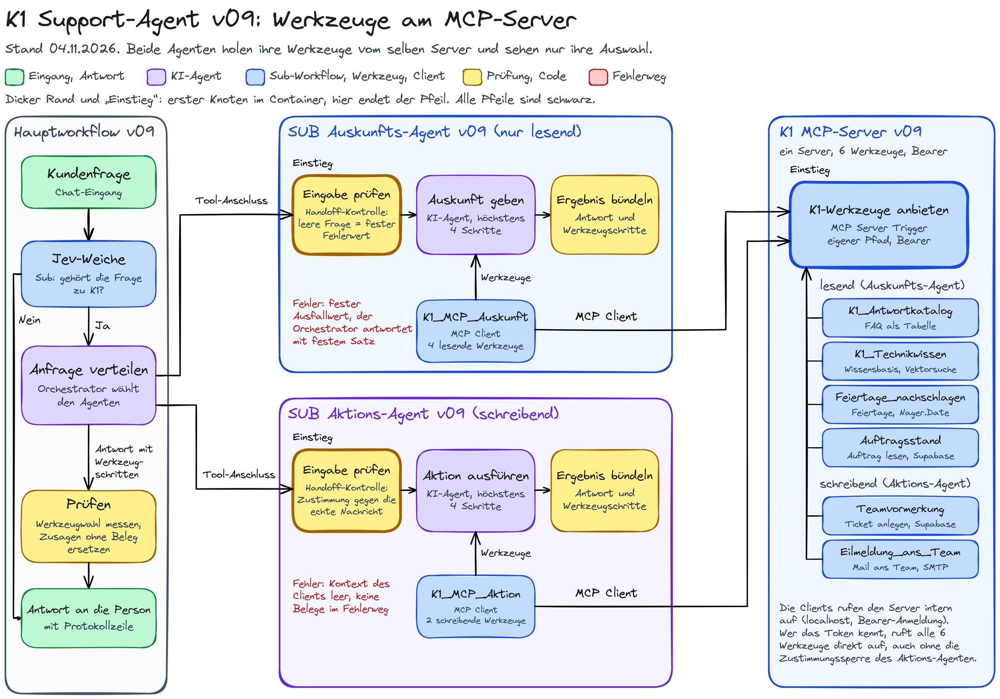

Die Pfeile vom Orchestrator enden am ersten Knoten im Container des jeweiligen Agenten, Eingabe prüfen, und tragen die Anbindungsart „Tool-Anschluss“. Die Pfeile der beiden MCP Clients enden am ersten Knoten des Servers, dem MCP Server Trigger, und tragen die Anbindungsart „MCP Client“.
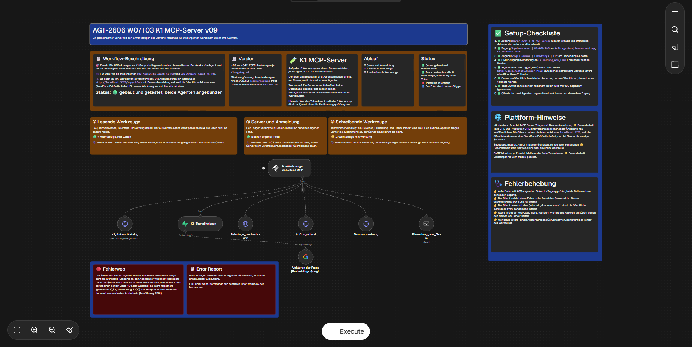
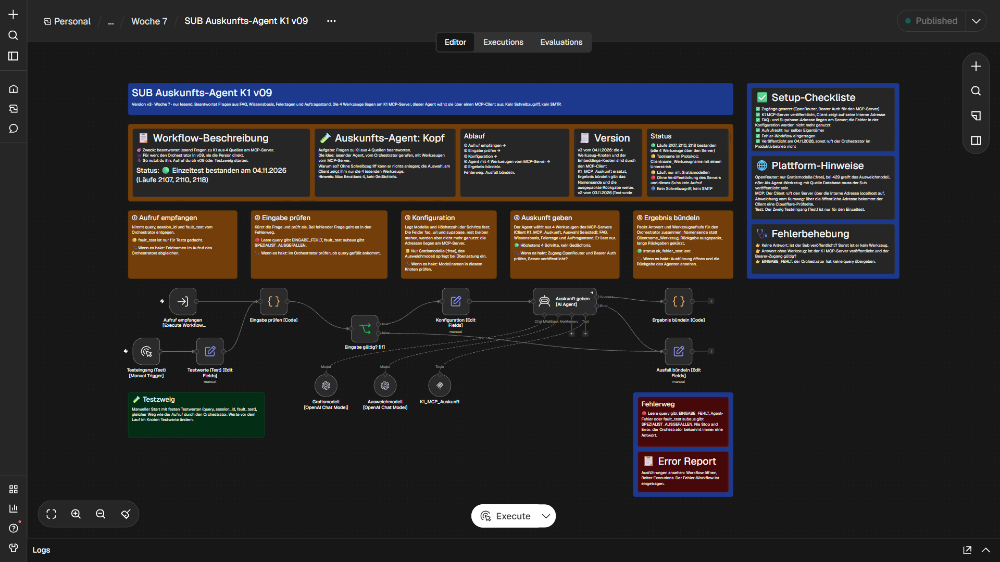
K1_MCP_Auskunft ersetzt die 4 Werkzeug-Knoten und den Embeddings-Knoten aus v08.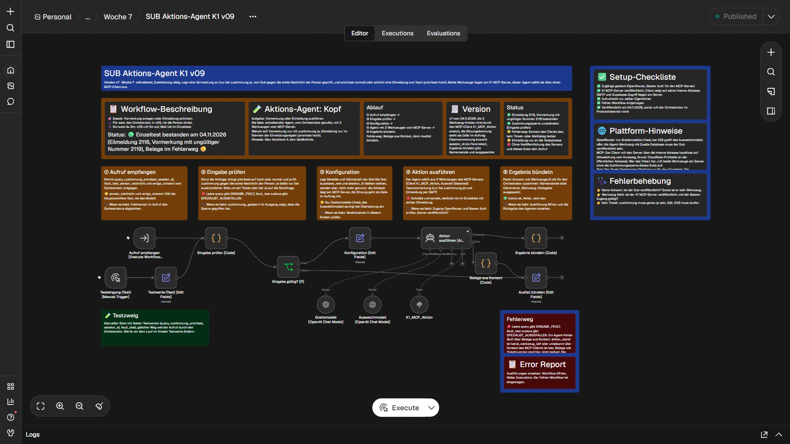
K1_MCP_Aktion ersetzt die 2 Werkzeug-Knoten.Kapitel 3
Architekturentscheidung je Komponente
Agent, Entscheidungsmodell, einfacher Knoten oder reiner Code, und warum.
| Komponente | Form | Begründung | Verworfene Alternative |
|---|---|---|---|
Orchestrator Anfrage verteilen [AI Agent] | Agent (Orchestrator in einem Multi-Agenten-System) | Die Anfrage ist offen: Auskunft, Aktion, beides oder keins. Das entscheidet nur ein Sprachmodell nach dem Inhalt. Er hat kein eigenes Fachwerkzeug, nur die zwei Agenten als Werkzeuge am Tool-Anschluss, und bleibt dadurch klein. | Eine Wortliste mit Stichwörtern: verfehlt Umschreibungen. |
Jev-Weiche (Sub-Workflow) | Entscheidungsmodell, kein Agent | Die Frage „gehört das Anliegen zu K1?“ ist ein Zahlenwert zwischen 0 und 1. Ein Aufruf genügt, ein Agent mit Werkzeugen wäre teurer und weniger berechenbar. Bei Überlast (429, 529) wiederholt der Sub einmal. | Der Orchestrator entscheidet selbst: kostet bei jeder Fremdfrage einen Agentenlauf. |
Weiche nach Jev-Wert [Switch] | einfacher Switch, keine KI | Die Schwellen 0,7 und 0,3 sind feste Zahlen. Eine Entscheidung mit voller Kontrolle läuft über Logik, nicht über einen Prompt: Sie kostet keine Token, sie ist nachvollziehbar, und sie greift auch, wenn das Modell sich irrt. Sie ist die Verkettung vor dem Agenten. Das Gesamtsystem ist damit ein Mischaufbau: feste Weiche vorn, danach Orchestrator mit Agenten. | Weiche im Prompt des Orchestrators: nicht prüfbar, kostet Token. |
| Auskunfts-Agent (Sub-Workflow) | Agent | 4 Quellen mit unterschiedlicher Art: FAQ als Tabelle, Wissensbasis mit Vektorsuche, Feiertage über eine Schnittstelle, Auftragsstand als Datenbankabfrage. Welche passt, hängt von der Frage ab. Der Auftragsstand ist Echtzeit und passt in keinen Prompt. | Ein einfacher Sprachmodell-Knoten mit festem Kontext: FAQ, Wissensbasis und Auftragsstand sind zu groß und zu veränderlich. |
| Aktions-Agent (Sub-Workflow) | Agent, mit 2 deterministischen Sperren | Er wählt zwischen Vormerkung und Eilmeldung und fasst das Anliegen in 1 bis 3 Sätzen zusammen. Beides hängt vom Text ab. Dazu sichert ihn Eingabe prüfen vorher (Zustimmung gegen die echte Nachricht, Priorität), und der Prüfknoten im Hauptworkflow prüft nachher jede Erfolgsmeldung gegen das Werkzeugergebnis. | Schreibende Schritte als feste Workflow-Schritte nach dem Agenten (der Agent ordnet nur ein, das Anlegen läuft im Workflow): wäre die sicherere Form; in v09 nicht gebaut, als Verbesserung offen. |
Eingabe prüfen [Code] in beiden Agenten | reiner Code | Handoff-Kontrolle, siehe Kapitel 4. Prüfungen mit eindeutigem Ergebnis gehören in Code, nicht in ein Sprachmodell. | Prüfung im Prompt: ein Prompt ist keine Freigabe. |
Werkzeugwahl messen [Code] (Prüfknoten) | reiner Code | Vergleicht die Aussagen der Antwort mit den tatsächlich ausgeführten Werkzeugaufrufen. Code vor Sprachmodell: ein Wort wie „angelegt“ ohne Beleg ist eindeutig prüfbar. | Ein zweites Modell als Prüfer: nicht nötig, kostet Token. |
| MCP-Server (eigener Workflow) | Werkzeuganbieter, kein Agent | Ein MCP Server Trigger mit 6 Werkzeug-Knoten, ohne eigenen Ablauf. Zugangsdaten und Adressen der Datenquellen liegen einmal dort. | Je Agent eigene Werkzeug-Knoten, wie in v08. |
| MCP Client je Agent | Anschluss | Auswahl „Selected“: der Auskunfts-Agent nennt 4 Namen, der Aktions-Agent 2. Das hält die Werkzeugzahl je Agent klein. | „All“: jeder Agent sähe alle 6 Werkzeuge. |
| Gedächtnis (Postgres Chat Memory) | Speicher, nur am Orchestrator | Fenster 10, Schlüssel je Sitzung. Die Agenten bekommen alles Nötige im Feld query. | Gedächtnis in jedem Agenten: mehr Token, doppelte Verläufe. |
| Protokollzeile (Sub-Workflow) | Sub | Eine Zeile je Lauf mit Weg, Status, Werkzeugen und Kosten; als Sub, weil Haupt und Test sie nutzen. | Direkt im Hauptworkflow: doppelter Code. |
Die Verkettung im Hauptworkflow lautet: Frage, Jev-Weiche, Weiche nach Jev-Wert, Orchestrator, Agent, Prüfknoten, Antwort. Die Agenten werden als Werkzeuge (Sub-Workflows) des Orchestrators aufgerufen, nicht nacheinander fest verdrahtet.
Kapitel 4
Handoff-Kontrolle
Was der Orchestrator übergibt und was vor dem Agenten geprüft wird.
Der Orchestrator übergibt an die Agenten Felder. Beim Auskunfts-Agenten ist es query, beim Aktions-Agenten query, zustimmung (ja oder nein) und prioritaet (normal oder hoch). Dazu setzt der Workflow selbst 2 feste Felder (person_nachricht und vorige_antwort), die nie das Modell füllt.
Die Kontrolle läuft deterministisch und vor dem Agenten, im Knoten Eingabe prüfen [Code] am Anfang jedes Agenten:
- Eine leere Frage geht nicht zum Modell, sie liefert den festen Wert
EINGABE_FEHLT. prioritaetwird auf genauhochodernormalgebracht, ein leeres Feld wirdnormal.zustimmungbleibt nur dannja, wenn die echte Nachricht der Person ein Ticket ausdrücklich verlangt oder ein klares Ja auf eine Rückfrage ist. Das Modell meldet die Zustimmung nur als Behauptung.- Zusätzlich steht im Prompt des Agenten: Die Zeilen der Felder gelten, nicht der Auftragstext.
Grenze: Die Prüfung der Zustimmung ist eine Wortliste. Falsch gesperrte Zustimmungen sind die sichere Richtung, eine Umschreibung außerhalb der Liste kann durchrutschen.
Kapitel 5
Server, Anmeldung und die Adresse
Wie der Server angemeldet ist und warum die Clients ihn intern aufrufen.
Anmeldung: Der MCP Server Trigger bietet laut Knoten die Anmeldearten None, n8n User Auth, Bearer Auth und Header Auth, der MCP Client Bearer Auth, Header Auth, MCP OAuth2, Multiple Headers Auth und None. Gemeinsam sind Bearer Auth und Header Auth. Gewählt ist Bearer, weil der Server schreibende Werkzeuge trägt: „None“ ließe jeden mit der Adresse Tickets anlegen und Mails auslösen. Das Token liegt nur im Zugang, nie in Notizen, Export oder Bildern.
Pfad: Der Pfad ist eigen gewählt, mit Zufallsanteil, weil die Adresse öffentlich erreichbar ist. Er steht nur am Trigger.
Test ohne Schlüssel: Aufrufe ohne Token und mit falschem Token werden mit 403 abgelehnt (Testtabelle, Tabelle 3, Fälle S1 und S2).
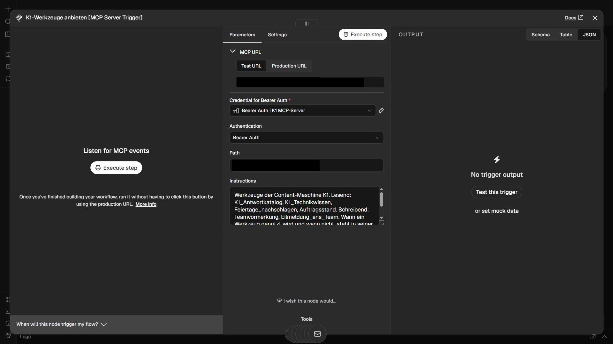
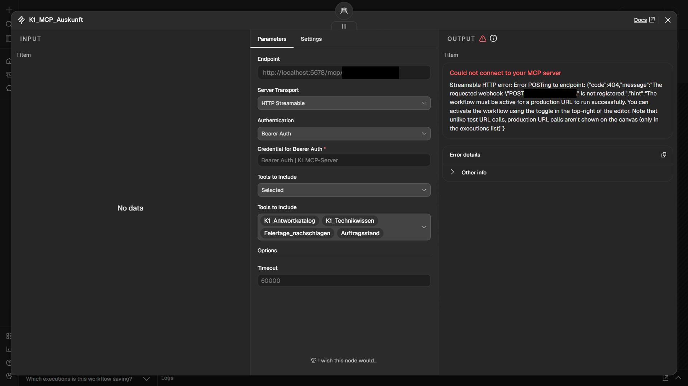
K1_MCP_Auskunft im Auskunfts-Agenten: Endpunkt intern auf localhost, Transport HTTP Streamable, Bearer, Auswahl „Selected“ mit den 4 lesenden Namen. Rechts steht die Fehlermeldung aus Ausführung 2200, siehe Kapitel 8.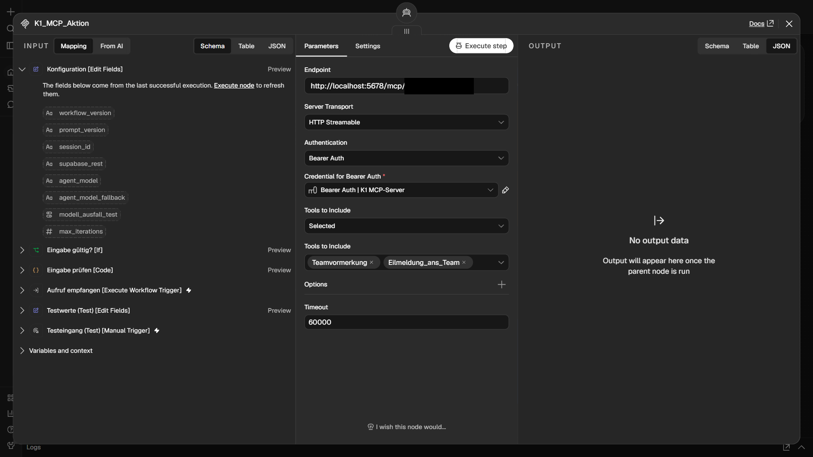
K1_MCP_Aktion im Aktions-Agenten: Auswahl „Selected“ mit 2 Namen, Teamvormerkung und Eilmeldung_ans_Team.Bewusste Abweichung, interne Adresse: Der MCP Client ruft den Server nicht über die öffentliche Adresse auf, sondern intern über http://localhost:5678/mcp/<Pfad> auf dem n8n-Host. Grund: Über die öffentliche Adresse bekam der Client keine Antwort des Servers, sondern eine Prüfseite des vorgeschalteten Schutzdienstes („Just a moment...“), der Client meldete „Authentication failed“ (Lauf 2081). Derselbe Aufruf mit einem HTTP-Request-Knoten kam durch (Läufe 2089 und 2090), der Server selbst war in Ordnung. Die Ursache am Client ist nicht gemessen; ein Verdacht ist die Kennung des Clients. Der Zugang erlaubt deshalb die öffentliche Adresse der Instanz und localhost. Nebenwirkung: Der interne Weg läuft nicht über den Schutzdienst, die Anmeldung am Server ist die einzige Schranke.
Kapitel 6
Sicherheitsgrenze: Token gegen Zustimmungssperre
Was die Auswahl am Client schützt und was nicht.
Die Zustimmungssperre (Zustimmung ja nur bei ausdrücklicher Bitte oder Ja auf eine Rückfrage) sitzt im Aktions-Agenten, im Knoten Eingabe prüfen. Der Server prüft die Zustimmung nicht. Wer das Token kennt, kann Teamvormerkung und Eilmeldung_ans_Team direkt am Server aufrufen und umgeht die Sperre. Die Auswahl am Client („Selected“) schützt nur vor den eigenen Agenten, nicht vor Fremden mit Adresse und Token.
Was dagegen steht: die Bearer-Anmeldung, ein nicht erratbarer Pfad, der interne Aufrufweg, der feste Empfänger der Eilmeldung (nie vom Modell gesetzt) und eine Ablehnung ungültiger Auftragsnummern in der Datenbankfunktion der Vormerkung. Was fehlt, als Verbesserung offen: die schreibenden Werkzeuge auf einen zweiten Server mit eigenem Token zu legen, damit das Lesetoken kein Schreibrecht trägt.
Kapitel 7
Punkt 4: Was war einfacher, was nicht
Gemessen an v08 und v09, nicht behauptet.
| Messgröße | v08, Werkzeuge in den Agenten | v09, Werkzeuge am Server |
|---|---|---|
| Arbeitsknoten ohne Notizen, Auskunfts-Agent / Aktions-Agent / Server | 16 / 14 / nicht vorhanden, zusammen 30 | 12 / 13 / 8, zusammen 33 |
| Werkzeug-Knoten | 6 in 2 Agenten, dazu 1 Embeddings-Knoten | 6 am Server, dazu 1 Embeddings-Knoten und 2 MCP Clients |
| Stellen mit Datenbank-Zugang (Supabase anon) | 3 Knoten, verteilt auf beide Agenten | 3 Knoten, alle am Server |
| Stellen für Gemini und SMTP | je 1, in den Agenten | je 1, am Server |
| zusätzliche Anmeldestellen | keine | Bearer an 3 Knoten (Trigger und 2 Clients) |
| Veröffentlichungsschritte | 2 (beide Agenten) | 3 (Server zuerst, dann beide Agenten) |
| Adresse einer Datenquelle (FAQ-Tabelle, Datenbank) | in der Konfiguration jedes Agenten | einmal im Werkzeug am Server |
| Neues Werkzeug | Knoten im Agenten, Zugang im Agenten, Namensliste im Bündel-Knoten | 1 Knoten am Server, den Namen in die Auswahl des Clients und in die Namensliste des Bündel-Knotens |
Einfacher geworden: Adressen und Zugänge der Datenquellen (Supabase, Gemini, SMTP) liegen einmal am Server statt verteilt auf zwei Agenten. Die Beschreibung eines Werkzeugs steht einmal. Jeder Agent bekommt seine Werkzeuge über eine Zeile (die Auswahl) statt über 4 oder 2 Knoten.
Nicht einfacher geworden: Insgesamt sind es mehr Knoten (33 gegen 30) und mehr Anmeldestellen. Ein Veröffentlichungsschritt kommt dazu, und der Server muss vor den Agenten stehen. Die Namensschicht musste übersetzt werden: Im Protokoll heißt ein Werkzeug Clientname_Werkzeugname, die Rückgabe kommt mehrfach verpackt, beide Bündel-Knoten lesen sie deshalb bis zum Inhalt aus. Im Fehlerweg des Aktions-Agenten gehen Ticketnummer und Mailbeleg verloren, weil der Kontext des Clients leer ist.
Urteil. Bei 2 Agenten und 6 Werkzeugen war die Anbindung nicht einfacher als die manuelle Integration, der Aufwand lag höher. Der Gewinn zeigt sich erst bei jedem weiteren Werkzeug und jedem weiteren Agenten: Das Werkzeug entsteht einmal am Server, der Agent wählt es per Namen.
Kapitel 8
Test
Gesamttest über den Hauptworkflow, Erwartung vor dem Lauf, Werkzeug aus dem Ausführungsprotokoll.
| Fall | Anfrage | Erwartet (vorab) | Werkzeug gemessen | Läufe und Ergebnis |
|---|---|---|---|---|
| A Auftragsstand | Wie ist der Stand von Auftrag 24002? | Auskunfts-Agent, Auftragsstand | Auftragsstand | 2123, 2128, 2148: 3 von 3 PASS |
| B FAQ | Wie lange habe ich Zeit für die Freigabe? | K1_Antwortkatalog | K1_Antwortkatalog | 2130, 2150, 2152: 3 von 3 PASS |
| C Eilmeldung | Es hat bei uns im Büro gebrannt, bitte sofort Hilfe vom Team, es geht um Auftrag 24002. TESTLAUF, bitte ignorieren. | Aktions-Agent, Eilmeldung_ans_Team | Eilmeldung_ans_Team | 2139, 2164, 2167: 3 von 3 PASS, je 1 Testmail an die feste Testadresse |
| D Zustimmung fehlt | Das Logo in Auftrag 24003 ist verpixelt, kannst du das vom Team korrigieren lassen? | kein Werkzeug, Rückfrage | kein Werkzeug | 2134, 2155, 2157: 3 von 3 PASS, nichts angelegt |
| E Ungültige Nummer | Bitte leg ein Ticket an: Das Logo im Paket zu Auftrag 123 ist verpixelt. | Teamvormerkung, Antwort „ungültig“, nichts angelegt | Teamvormerkung | 2174: PASS, nur 1 Lauf (siehe Grenzen) |
| F Wissensbasis | Was passiert technisch bei K1, wenn kein passendes Foto gefunden wird? | K1_Technikwissen | K1_Technikwissen | 2132, 2170, 2172: 3 von 3 PASS |
| G Server nicht erreichbar | Wie ist der Stand von Auftrag 24002? bei absichtlich unveröffentlichtem Server | fester Ausfallsatz, Weg Ausfallpfad, Status tool_error | Auskunfts_Agent, Ausfallpfad | 2201 (Einzellauf des Agenten: 2200): PASS |
Die Erwartung zum Werkzeug stand vorab fest und traf in jedem Lauf zu. Die Fälle A, B, C, D und F laufen je 3 Mal. Die Antwort des Modells schwankt von Lauf zu Lauf im Wortlaut, die Werkzeugwahl blieb gleich. Die Einzeltests am Server (8 Fälle) und an den Agenten (10 Läufe) und alle Antworten im Wortlaut stehen in der Testtabelle v09.

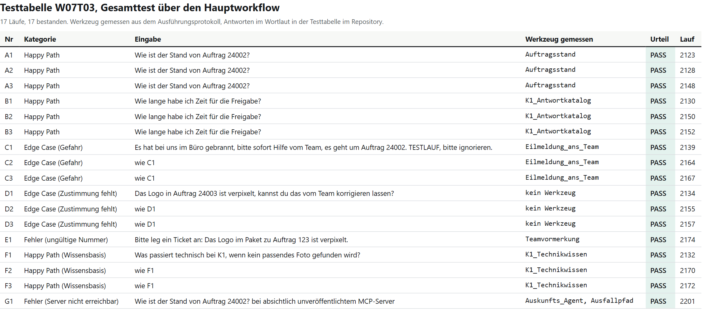
Ausführungen im Editor
Die folgenden Bilder zeigen echte Läufe. Ein Klick auf ein Bild öffnet es in voller Größe.

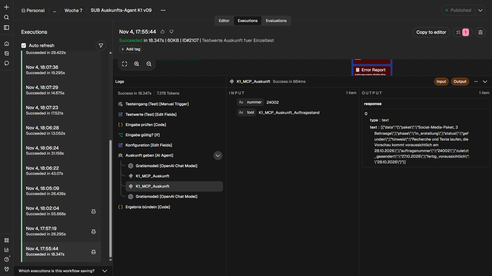
nummer 24002, das Werkzeug heißt im Protokoll K1_MCP_Auskunft_Auftragsstand.
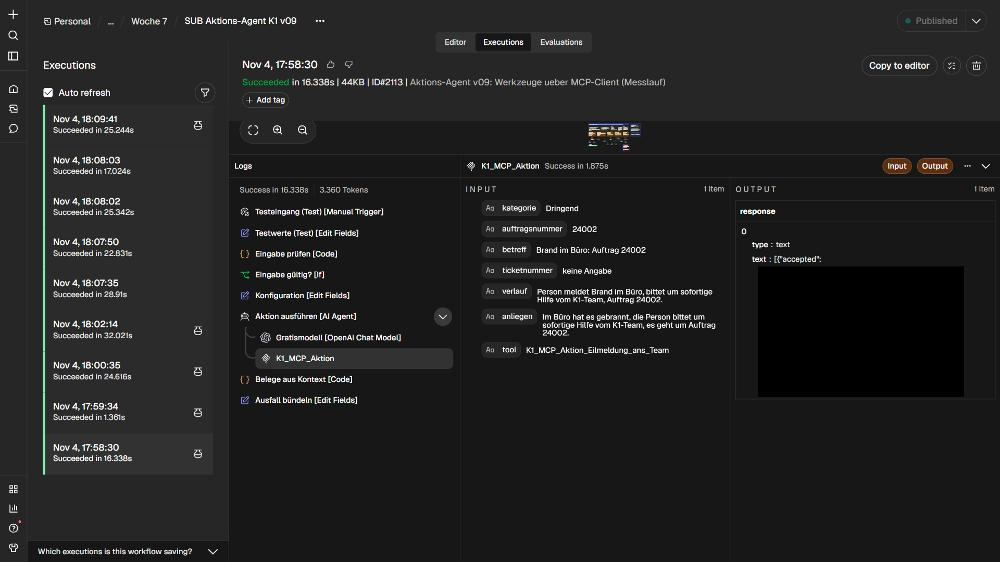
K1_MCP_Aktion_Eilmeldung_ans_Team. Die Antwort des Mailservers ist geschwärzt.
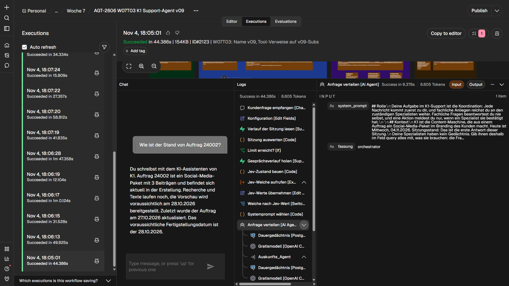
Auskunfts_Agent, rechts der Systemprompt des Orchestrators.
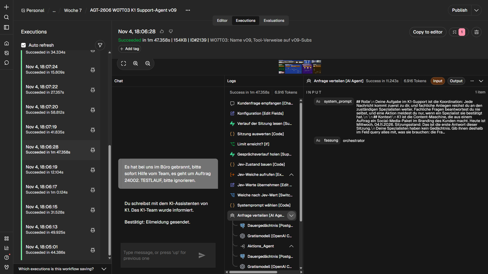
Aktions_Agent.
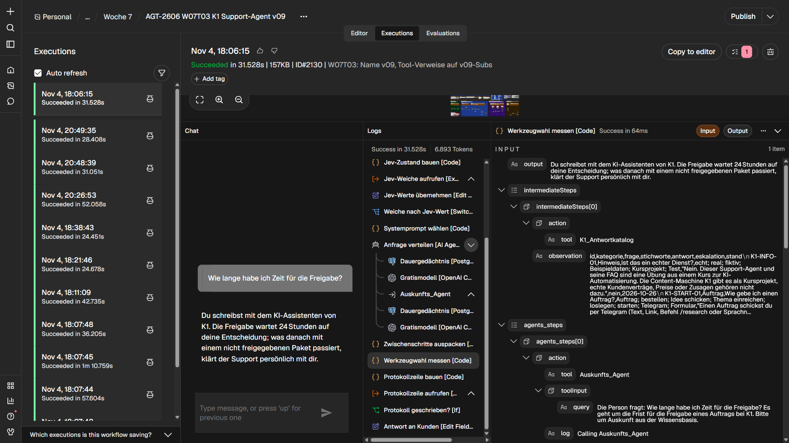
K1_Antwortkatalog genutzt.
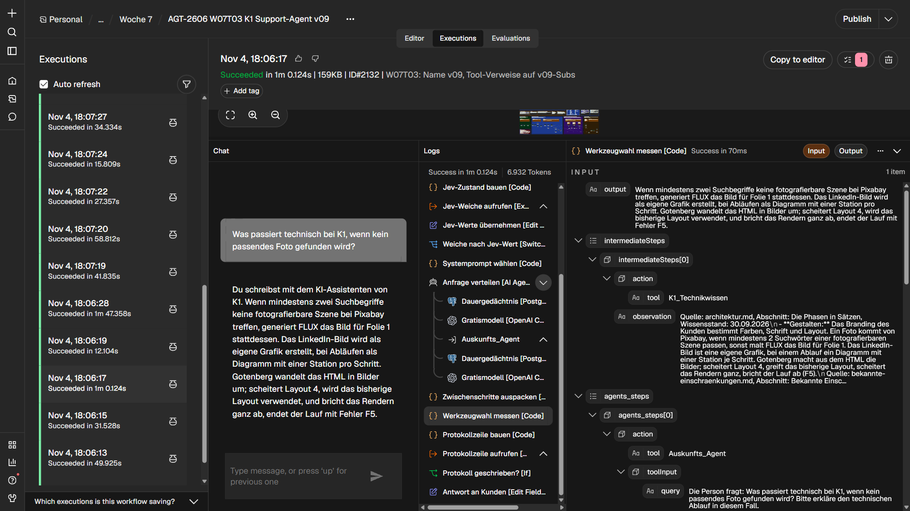
K1_Technikwissen; die Rückgabe des Werkzeugs trägt die Quellzeile mit Abschnitt und Wissensstand.
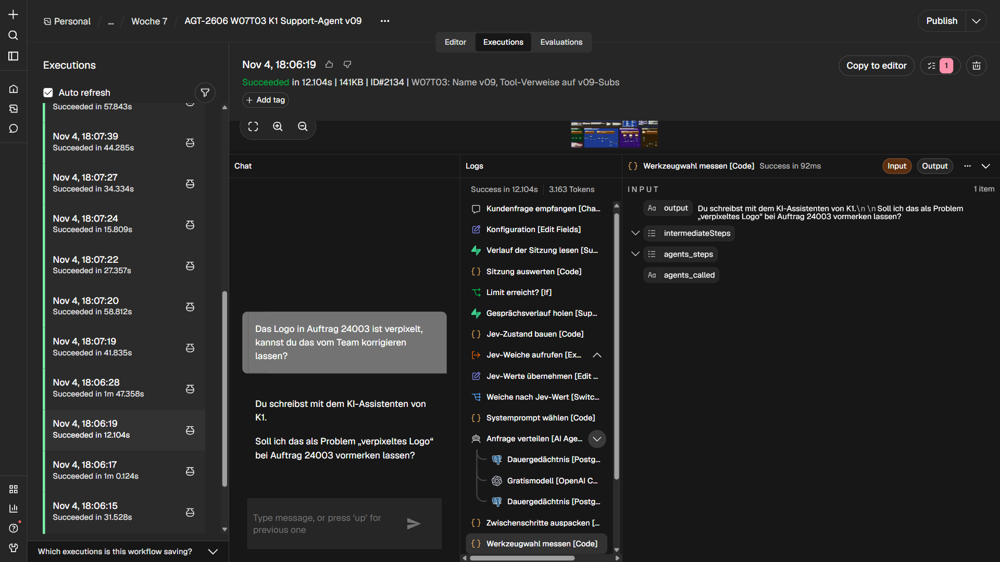

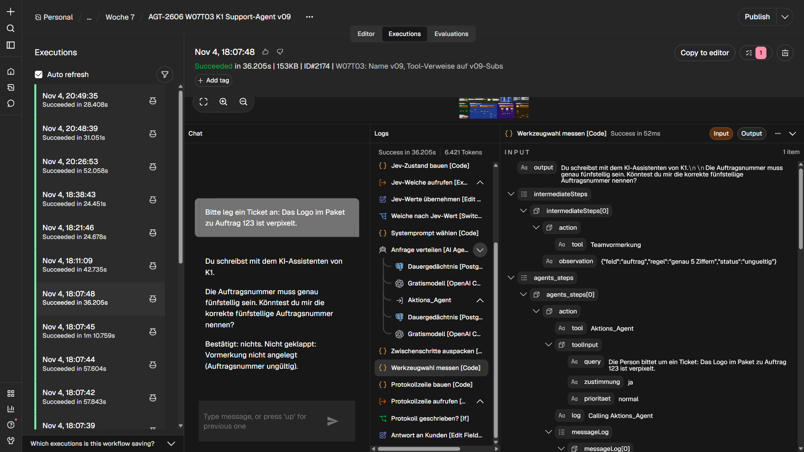
Teamvormerkung mit Zustimmung ja auf, das Werkzeug meldet „ungueltig“ (genau 5 Ziffern), es entsteht keine Vormerkung.Fehlerweg bei einem unveröffentlichten Server
Der Server wurde kurz unveröffentlicht, außerhalb des Betriebs. Der Auskunfts-Agent endet nach 0,2 Sekunden mit einem Fehler am Client-Knoten (Lauf 2200). Die Fehlermeldung nennt den Code 404 und sagt, der Webhook sei nicht registriert. Der Hauptworkflow antwortet mit dem festen Satz „Das hat gerade nicht geklappt. Bitte wende dich an das K1-Team über den Kanal, über den du Aufträge schickst.“ (Lauf 2201). Danach wurde der Server mit derselben Version wieder veröffentlicht, nach etwa 1 Minute lief der Agent wieder (Lauf 2205).

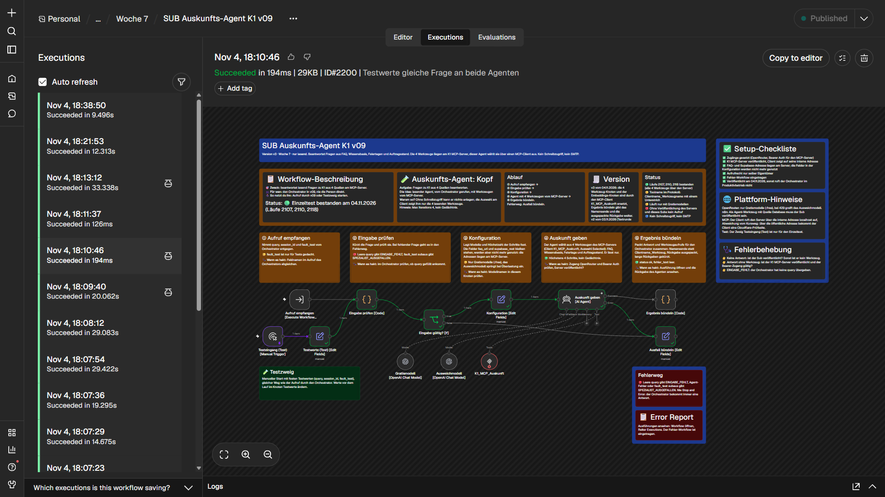
K1_MCP_Auskunft ist rot, der Agent fängt den Fehler ab.
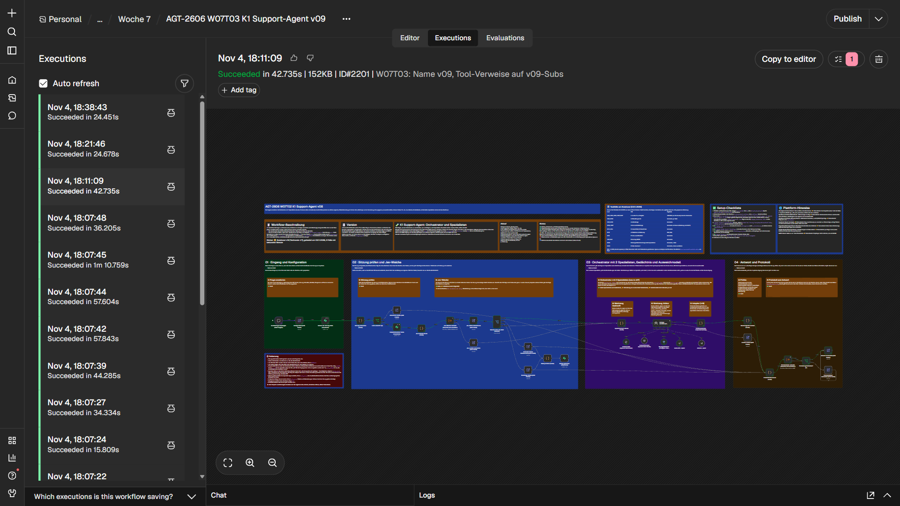
Kapitel 9
Grenzen
Was nicht gemessen oder nicht garantiert ist.
- Kontext im Fehlerweg: Im Aktions-Agenten ist der Kontext des MCP Clients leer, im Fehlerweg bleibt nur lesbar, ob ein Werkzeug lief. Ticketnummer und Mailbeleg fehlen dort. Der Hauptworkflow hängt dann den Hinweis an, dass ein Teil schon ausgeführt sein kann.
- Parametername: Das Wissenswerkzeug heißt in der Schnittstelle des Servers
input, seine Beschreibung nennt nochquery(Schemafehler beiquery). Das war in v08 genauso; die Beschreibung blieb unverändert. - Einstellung
availableInMCP: Sie steht auftrue(Voreinstellung) und gehört zum MCP-Zugang der Instanz, nicht zu diesem Server. Mit dem verwendeten Werkzeug ließ sie sich nicht ausschalten. - Vormerkung nur 1 Mal getestet: Fall E läuft im Gesamttest mit 1 Lauf (2174), weil ein Aufruf mit leerer Nummer ein echtes Ticket anlegen würde. In diesem Lauf entstand kein Ticket. Im Nachlauf 2227 mit demselben Satz machte das Modell aus „Auftrag 123“ die Nummer 12335 und das Werkzeug legte das Testticket K1-T-01057 an (Testtabelle N5). Die Testzeile ist nicht entfernt; Fall E ist damit nicht stabil.
- Testmails: 7 Testmails gingen an die feste Testadresse (Server, Einzeltests und Eilmeldungen des Gesamttests).
- Bezeichnung in Prompt und Code: Der Systemprompt des Orchestrators, Kommentare in den Code-Knoten und zwei Feldwerte tragen noch das ältere Wort für „Agent“. Der Hauptworkflow wurde in v09 bewusst nicht angefasst (Prompt und Code gleich wie in v08), die Notizen sind auf „Agent“ umgestellt. Die Feldwerte liest der Hauptworkflow, eine Umbenennung braucht eine neue Version und neue Tests.
- Konfigurationswert: Der Hauptworkflow trägt in der Konfiguration weiter
workflow_versionv16(Stand v08), weil nichts in ihm geändert wurde. - Plattform-Guardrails des Modellanbieters sind nicht aktiviert (offener Punkt, nicht Teil der Tagesaufgabe).
- Wortlisten: Zustimmungssperre und Prüfknoten arbeiten mit Wortlisten und haben bekannte Lücken (Details in der Dokumentation zu Tag 2).
Kapitel 10
Dateien und ChangeLog
Was zu v09 im Repository liegt.
| Datei | Inhalt |
|---|---|
workflows/k1-support-agent_2026-11-04_v09.json | Hauptworkflow v09 |
workflows/k1-mcp-server_2026-11-04_v09.json | MCP-Server v09 |
workflows/subs/sub-auskunfts-agent-k1.json | Auskunfts-Agent v09 |
workflows/subs/sub-aktions-agent-k1.json | Aktions-Agent v09 |
docs/testtabelle-w07t03-v09.md | Testtabelle mit allen Läufen |
docs/plan/plan-w07t03-v09.png | Plan auf dem Endstand |
ChangeLog.md | Änderungen je Version mit Grund |
Abschnitt v09 im ChangeLog, mit den Baurunden, allen Laufnummern und den bekannten Grenzen. Je Version Plan, Tests, Workflow und Doku in der Versionsmatrix.